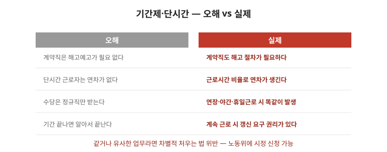

권리가 있어도 기간이 지나면 청구할 수 없습니다. 사건별로 어느 시계가 돌고 있는지 구분해서 봐야 합니다. 이 글은 돈 청구의 시효부터 행정 구제 기간·실무 순서까지 정리한 안내입니다. 구체 기간은 유형·시점에 따라 달라지므로 마지막 점검표까지 읽고 반드시 전문가에게 확인하세요. 이 글의 날짜를 그대로 적용하면 안 됩니다.

한눈에 보는 표 — 두 개의 시계
| 구분 | 대상 | 기산·대응 |
|---|---|---|
| 돈 청구 시효 | 임금·퇴직금 등 금전 청구 | 지급일부터 진행, 매달 각각 진행, 서면 청구로 중단 |
| 행정구제 신청기간 | 부당해고·부당노동행위·차별시정 | 발생·인지일부터 별도 계산, 경과 시 각하 |
1. 돈 청구의 시효 — 매달 따로 돈다
- 임금·퇴직금 등 금전 청구에는 소멸시효가 적용됩니다. 몇 해가 지나면 청구할 수 없습니다. 기간 길이는 유형별로 다르니 전문가 확인이 필요합니다.
- 시효는 급여 지급일처럼 청구할 수 있었던 시점부터 진행됩니다. 매달 발생하는 임금은 달마다 각각 진행됩니다. 오래된 달부터 소멸합니다.
- 청구로 시효가 중단될 수 있습니다. 내용증명·지급 요구 문서를 남기는 것이 그래서 중요합니다.
2. 행정 구제의 기간 — 소멸시효와 별개
- 부당해고·부당징계 구제신청, 부당노동행위 구제신청, 차별시정 신청에는 각각 별도의 신청 기간이 있습니다. 관련 글 노동위 구제 글의 기한표를 보세요.
- 이 기간은 소멸시효와 다르게 움직입니다. 사건이 발생한 날과 안 날을 기준으로 계산합니다.
- 기간을 넘기면 실체 판단 없이 각하될 수 있습니다. 확실하지 않으면 즉시 접수하고 나중에 보정하는 편이 안전합니다.
3. 실무 순서 — 짧은 것부터
- 사건 목록을 만들고 각각에 대해 (1) 발생 시점, (2) 안 시점, (3) 적용되는 기간을 적으세요.
- 남은 기한이 짧은 것부터 처리하세요. 여러 사건이 얽혀 있으면 시급한 것만 먼저 접수하세요.
- 재직 중인지 퇴직 후인지에 따라 선택할 수 있는 절차가 달라집니다. 퇴사 예정이라면 퇴사 전에 정리해 두는 것이 좋습니다.
자주 틀리는 3가지
- “한 번 요구하면 영구 중단” — 중단 효력과 요건을 따져야 합니다. 서면으로 남기세요.
- “행정 신청하면 돈 시효도 멈춘다” — 별개 시계입니다. 각각 대응하세요.
- “오래됐으니 포기” — 달마다 따로 돌므로 최근 달은 살아 있을 수 있습니다. 목록부터 만드세요.
현장 체크리스트
- □ 사건별 발생·인지 시점을 적었는가
- □ 돈 청구와 행정구제를 구분했는가
- □ 가장 짧은 기한을 달력에 표시했는가
- □ 서면 청구·접수를 했는가
- □ 퇴사 전 정리할 것을 정리했는가
자주 묻는 질문
- Q. 2년 전 체불도 되나요? — A. 달마다 따로 진행되므로 최근 달부터 확인하세요. 목록을 만들어 상담하세요.
- Q. 구두로 요구했습니다. — A. 구두 요구는 중단 근거로 인정받기 어렵습니다. 서면으로 남기세요.
- Q. 여러 사건이 겹쳤습니다. — A. 기한 짧은 것부터 접수하세요. 나머지는 순서대로 정리합니다.
- Q. 노조가 있는데 따로 해야 하나요? — A. 단체 교섭·진정·구제신청을 함께 설계해 기간을 놓치지 않게 관리하세요.
근거와 원문
이 글은 2026-09-19 기준 일반 안내입니다. 구체적인 기간은 사건 유형과 시점에 따라 달라지므로 반드시 전문가에게 확인하세요. 이 글의 날짜를 그대로 적용하면 안 됩니다. 법률 자문이 아닙니다.